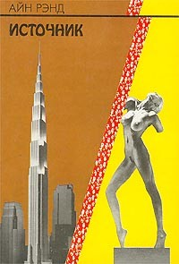

Айн Рэнд - Источник (1943)
Пять лет назад эта книга подвзорвала мне мозг: одна из тех вещей, от которой не можешь оторваться всю ночь и в итоге не спишь вовсе. Поражён я был совпадением моих взглядов на жизнь, и способа жизни главного героя. Важный момент именно в этом: я так всего лишь думал, и иногда жил, а главный герой Говард Рорк именно жил, причем на полную. После прочтения я подсадил на эту книгу ещё как минимум 5 человек. Сейчас я отношусь к книге достаточно спокойно, но тогда это был своего рода прорыв.О чём она? Источник рассказывает историю архитектора Говарда Рорка - со времени окончания им школы. Затягивает невероятно хлёсткий и дерзкий стиль письма: Айн Рэнд, а вернее Алиса Розенбаум, будучи русско-еврейской иммигранткой в Штатах, повидала ужасы совка и вообще была, как это говорится, женщиной с яйцами. Книга насыщенна её идеями и представлениями о том, как надо жить, и как жить не надо, воплощенными в различных персонажах: прообраз идеального человека исполняет в "Источнике" главный герой, архетип ленивой посредственности играет соответствующий человечек, хитрый властолюбец и манипулятор довлеющий над толпой есть там тоже. Личность каждого из этих людей прописана до мелочей, каждая деталька их образа лишь подкрепляет впечатление. Вообще, Айн Рэнд часто обвиняли за преувеличения и обилие трафаретных персонажей в её книгах, но я ничего не имею против - ТАК всё равно никто не пишет :)
Краеугольным камнем книги является философия "объективизма", как она сама назвала своё мировоззрение. Рэнд объясняет философию так: "the concept of man as a heroic being, with his own happiness as the moral purpose of his life, with productive achievement as his noblest activity, and reason as his only absolute". Я бы попытался пролить свет на её идеи следующим образом: объективизм - это замес индивидуализма (то есть крайнее неприятие социализма и любой коллективности, что вполне понятно: Айн Рэнд сбежала из советского союза не просто так) и максимального эгоизма. Причем эгоизм берётся в правильном значении: не в смысле эгоцентризма, а в смысле полного осознания себя, своих желаний и стремлений. Так или иначе, главный герой книги чётко видит свою цель - строить охрененные небоскрёбы, и идёт к ней не смотря ни на что и забив на себя, совершенно правильно игнорирует мнение толпы, не обращает внимание и не участвует в социальных играх и вообще, проще говоря, имеет виденье (vision) и воплощает его. Будучи революционером в своих идеях и опережая общественный взгляд, Говард Рорк встречает на своём пути многочисленные препятствия, но успешно их преодолевает, оставаясь верным себе.
Мои цитаты Айн Рэнд оказались потеряны вместе с одним из старых телефонов. К счастью, Женька любезно поделилась своими цитатами, правда из другой книги Айн Рэнд - Атлант расправил плечи. Впрочем, для наших целей это прекрасно подошло, ведь Атлант по сути есть растянутая версия Источника :)
Атлант Расправил Плечи, книга 3 (1957)
Цель жизни – радость, и что радость не попадает в руки случайно, как клад, – ее надо добиваться, и что нельзя позволять, чтобы лик радости утонул в трясине сиюминутной пытки, так как это означало бы предать радость.
Первой предпосылкой к возникновению чувства самоуважения служит тот лучезарный эгоизм души, который побуждает искать лучшего во всем, будь то нечто физическое или духовное, душа, стремящаяся прежде всего к моральному самосовершенствованию, ценя превыше всего себя.